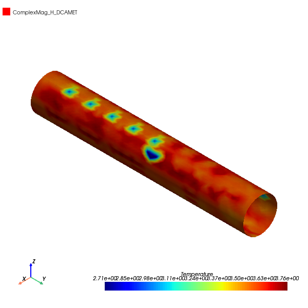
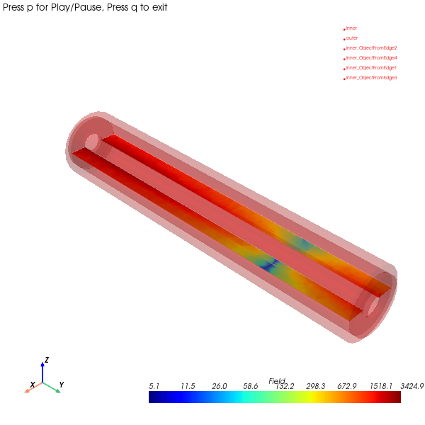
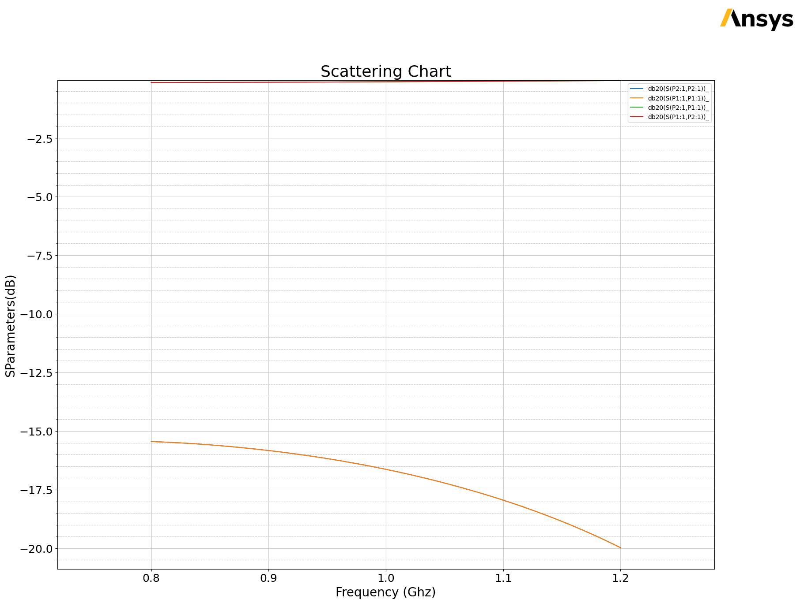

Download this example
Download this example as a Jupyter Notebook or as a Python script.
Coaxial#
This example shows how to create a project from scratch in HFSS and Icepak. This includes creating a setup, solving it, and creating postprocessing outputs.
Keywords: Multiphysics, HFSS, Icepak.
Perform imports and define constants#
Perform required imports.
[1]:
import os
import tempfile
import time
[2]:
import ansys.aedt.core
from ansys.aedt.core.visualization.plot.pdf import AnsysReport
Define constants.
[3]:
AEDT_VERSION = "2024.2"
NUM_CORES = 4
NG_MODE = False # Open AEDT UI when it is launched.
Create temporary directory#
Create a temporary directory where downloaded data or dumped data can be stored. If you’d like to retrieve the project data for subsequent use, the temporary folder name is given by temp_folder.name.
[4]:
temp_folder = tempfile.TemporaryDirectory(suffix=".ansys")
Launch AEDT and initialize HFSS#
Launch AEDT and initialize HFSS. If there is an active HFSS design, the hfss object is linked to it. Otherwise, a new design is created.
[5]:
hfss = ansys.aedt.core.Hfss(
project=os.path.join(temp_folder.name, "Icepak_HFSS_Coupling"),
design="RF",
version=AEDT_VERSION,
non_graphical=NG_MODE,
new_desktop=True,
solution_type="Modal",
)
PyAEDT INFO: Python version 3.10.11 (tags/v3.10.11:7d4cc5a, Apr 5 2023, 00:38:17) [MSC v.1929 64 bit (AMD64)]
PyAEDT INFO: PyAEDT version 0.12.dev0.
PyAEDT INFO: Initializing new Desktop session.
PyAEDT INFO: Log on console is enabled.
PyAEDT INFO: Log on file C:\Users\ansys\AppData\Local\Temp\pyaedt_ansys_db6da5b4-7e95-4d82-a636-c09464477732.log is enabled.
PyAEDT INFO: Log on AEDT is enabled.
PyAEDT INFO: Debug logger is disabled. PyAEDT methods will not be logged.
PyAEDT INFO: Launching PyAEDT with gRPC plugin.
PyAEDT INFO: New AEDT session is starting on gRPC port 61170
PyAEDT INFO: AEDT installation Path C:\Program Files\AnsysEM\v242\Win64
PyAEDT INFO: Ansoft.ElectronicsDesktop.2024.2 version started with process ID 7356.
PyAEDT INFO: Project Icepak_HFSS_Coupling has been created.
PyAEDT INFO: Added design 'RF' of type HFSS.
PyAEDT INFO: Aedt Objects correctly read
Define parameters#
Parameters can be instantiated by defining them as a key used for the application instance as demonstrated in the following code. The prefix $ is used to define a project-wide scope for the parameter. Otherwise, the parameter scope is limited to the current design.
[6]:
hfss["$coax_dimension"] = "100mm" # Project-wide scope.
udp = hfss.modeler.Position(0, 0, 0)
hfss["inner"] = "3mm" # Local "Design" scope.
PyAEDT INFO: Modeler class has been initialized! Elapsed time: 0m 1sec
Create coaxial and cylinders#
Create a coaxial and three cylinders. You can apply parameters directly using the ansys.aedt.core.modeler.Primitives3D.Primitives3D.create_cylinder() method. You can assign a material directly to the object creation action. Optionally, you can assign a material using the assign_material() method.
[7]:
o1 = hfss.modeler.create_cylinder(
orientation=hfss.PLANE.ZX,
origin=udp,
radius="inner",
height="$coax_dimension",
num_sides=0,
name="inner",
)
o2 = hfss.modeler.create_cylinder(
orientation=hfss.PLANE.ZX,
origin=udp,
radius=8,
height="$coax_dimension",
num_sides=0,
name="teflon_based",
)
o3 = hfss.modeler.create_cylinder(
orientation=hfss.PLANE.ZX,
origin=udp,
radius=10,
height="$coax_dimension",
num_sides=0,
name="outer",
)
PyAEDT INFO: Materials class has been initialized! Elapsed time: 0m 0sec
Assign colors#
Assign colors to each primitive.
[8]:
o1.color = (255, 0, 0)
o2.color = (0, 255, 0)
o3.color = (255, 0, 0)
o3.transparency = 0.8
hfss.modeler.fit_all()
Assign materials#
Assign materials. You can assign materials either directly when creating the primitive, which was done for id2, or after the object is created.
[9]:
o1.material_name = "Copper"
o3.material_name = "Copper"
Perform modeler operations#
Perform modeler operations. You can subtract, add, and perform other operations using either the object ID or object name.
[10]:
hfss.modeler.subtract(o3, o2, True)
hfss.modeler.subtract(o2, o1, True)
[10]:
True
Assign mesh operations#
Most mesh operations are accessible using the mesh property, which is an instance of the ansys.aedt.core.modules.MeshIcepak.IcepakMesh class.
This code shows how to use several common mesh operations.
[11]:
hfss.mesh.assign_initial_mesh_from_slider(level=6)
hfss.mesh.assign_model_resolution(assignment=[o1.name, o3.name], defeature_length=None)
hfss.mesh.assign_length_mesh(
assignment=o2.faces, inside_selection=False, maximum_length=1, maximum_elements=2000
)
PyAEDT INFO: Mesh class has been initialized! Elapsed time: 0m 0sec
PyAEDT INFO: Mesh class has been initialized! Elapsed time: 0m 0sec
[11]:
<ansys.aedt.core.modules.mesh.MeshOperation at 0x1fff53b2ce0>
Create HFSS sources#
The RF power dissipated in the HFSS model acts as the thermal source for in Icepak. The create_wave_port_between_objects() method is used to assign the RF ports that inject RF power into the HFSS model. If add_pec_cap=True, then the method creates a perfectly conducting (lossless) cap covering the port.
[12]:
hfss.wave_port(
assignment="inner",
reference="outer",
integration_line=1,
create_port_sheet=True,
create_pec_cap=True,
name="P1",
)
hfss.wave_port(
assignment="inner",
reference="outer",
integration_line=4,
create_pec_cap=True,
create_port_sheet=True,
name="P2",
)
port_names = hfss.get_all_sources()
hfss.modeler.fit_all()
PyAEDT INFO: Parsing design objects. This operation can take time
PyAEDT INFO: Parsing C:/Users/ansys/AppData/Local/Temp/tmp0d3kvehx.ansys/Icepak_HFSS_Coupling.aedt.
PyAEDT INFO: File C:/Users/ansys/AppData/Local/Temp/tmp0d3kvehx.ansys/Icepak_HFSS_Coupling.aedt correctly loaded. Elapsed time: 0m 0sec
PyAEDT INFO: aedt file load time 0.015619516372680664
PyAEDT INFO: 3D Modeler objects parsed. Elapsed time: 0m 0sec
PyAEDT INFO: Deleted 1 Objects: inner_ObjectFromEdge1.
PyAEDT INFO: Parsing design objects. This operation can take time
PyAEDT INFO: 3D Modeler objects parsed. Elapsed time: 0m 0sec
PyAEDT INFO: Deleted 1 Objects: inner_ObjectFromEdge2.
PyAEDT INFO: Parsing design objects. This operation can take time
PyAEDT INFO: 3D Modeler objects parsed. Elapsed time: 0m 0sec
PyAEDT INFO: Connection Correctly created
PyAEDT INFO: Boundary Wave Port P1 has been correctly created.
PyAEDT INFO: Parsing design objects. This operation can take time
PyAEDT INFO: 3D Modeler objects parsed. Elapsed time: 0m 0sec
PyAEDT INFO: Deleted 1 Objects: inner_ObjectFromEdge3.
PyAEDT INFO: Parsing design objects. This operation can take time
PyAEDT INFO: 3D Modeler objects parsed. Elapsed time: 0m 0sec
PyAEDT INFO: Deleted 1 Objects: inner_ObjectFromEdge4.
PyAEDT INFO: Parsing design objects. This operation can take time
PyAEDT INFO: 3D Modeler objects parsed. Elapsed time: 0m 0sec
PyAEDT INFO: Connection Correctly created
PyAEDT INFO: Boundary Wave Port P2 has been correctly created.
Set up simulation#
Create a HFSS setup with default values. After its creation, you can change values and update the setup. The update() method returns a Boolean value.
[13]:
hfss.set_active_design(hfss.design_name)
setup = hfss.create_setup("MySetup")
setup.props["Frequency"] = "1GHz"
setup.props["BasisOrder"] = 2
setup.props["MaximumPasses"] = 1
PyAEDT INFO: Python version 3.10.11 (tags/v3.10.11:7d4cc5a, Apr 5 2023, 00:38:17) [MSC v.1929 64 bit (AMD64)]
PyAEDT INFO: PyAEDT version 0.12.dev0.
PyAEDT INFO: Returning found Desktop session with PID 7356!
PyAEDT INFO: Project Icepak_HFSS_Coupling set to active.
PyAEDT INFO: Aedt Objects correctly read
Create frequency sweep#
The HFSS frequency sweep defines the RF frequency range over which the RF power is injected into the structure.
[14]:
sweepname = hfss.create_linear_count_sweep(
setup="MySetup",
units="GHz",
start_frequency=0.8,
stop_frequency=1.2,
num_of_freq_points=401,
sweep_type="Interpolating",
)
PyAEDT INFO: Linear count sweep Sweep_00887P has been correctly created.
Create Icepak model#
After an HFSS setup has been defined, the model can be lnked to an Icepak design. The coupled physics analysis can then be run. The FieldAnalysis3D.copy_solid_bodies_from() method imports a model from HFSS into Icepak, including all material definitions.
[15]:
ipk = ansys.aedt.core.Icepak(design="CalcTemp", version=AEDT_VERSION)
ipk.copy_solid_bodies_from(hfss)
PyAEDT INFO: Python version 3.10.11 (tags/v3.10.11:7d4cc5a, Apr 5 2023, 00:38:17) [MSC v.1929 64 bit (AMD64)]
PyAEDT INFO: PyAEDT version 0.12.dev0.
PyAEDT INFO: Returning found Desktop session with PID 7356!
PyAEDT INFO: No project is defined. Project Icepak_HFSS_Coupling exists and has been read.
PyAEDT INFO: Added design 'CalcTemp' of type Icepak.
PyAEDT INFO: Aedt Objects correctly read
PyAEDT INFO: Modeler class has been initialized! Elapsed time: 0m 0sec
PyAEDT INFO: Modeler class has been initialized! Elapsed time: 0m 0sec
PyAEDT INFO: Parsing design objects. This operation can take time
PyAEDT INFO: 3D Modeler objects parsed. Elapsed time: 0m 0sec
[15]:
True
Link RF thermal source#
The RF loss in HFSS is used as the thermal source in Icepak.
[16]:
surfaceobj = ["inner", "outer"]
ipk.assign_em_losses(
design=hfss.design_name,
setup="MySetup",
sweep="LastAdaptive",
map_frequency="1GHz",
surface_objects=surfaceobj,
parameters=["$coax_dimension", "inner"],
)
PyAEDT INFO: Mapping EM losses.
PyAEDT INFO: EM losses mapped from design: RF.
[16]:
<ansys.aedt.core.modules.boundary.BoundaryObject at 0x1fff2087790>
Set direction of gravity#
Set the direction of gravity for convection in Icepak. Gravity drives a temperature gradient due to the dependence of gas density on temperature.
[17]:
ipk.edit_design_settings(hfss.GRAVITY.ZNeg)
[17]:
True
Set up Icepak Project#
The initial solution setup applies default values that can subsequently be modified as shown in the following code. The props property enables access to all solution settings.
The update function applies the settings to the setup. The setup creation process is identical for all tools.
[18]:
setup_ipk = ipk.create_setup("SetupIPK")
setup_ipk.props["Convergence Criteria - Max Iterations"] = 3
Access Icepak solution properties#
Setup properties are accessible through the props property as an ordered dictionary. You can use the keys() method to retrieve all settings for the setup.
Find properties that contain the string "Convergence" and print the default values.
[19]:
conv_props = [k for k in setup_ipk.props.keys() if "Convergence" in k]
print("Here are some default setup properties:")
for p in conv_props:
print('"' + p + '" -> ' + str(setup_ipk.props[p]))
Here are some default setup properties:
"Convergence Criteria - Flow" -> 0.001
"Convergence Criteria - Energy" -> 1e-07
"Convergence Criteria - Turbulent Kinetic Energy" -> 0.001
"Convergence Criteria - Turbulent Dissipation Rate" -> 0.001
"Convergence Criteria - Specific Dissipation Rate" -> 0.001
"Convergence Criteria - Discrete Ordinates" -> 1e-06
"Convergence Criteria - Max Iterations" -> 3
"GPU Convergence Criteria - Flow" -> 0.001
"GPU Convergence Criteria - Energy" -> 1e-05
"GPU Convergence Criteria - Turbulent Kinetic Energy" -> 0.001
"GPU Convergence Criteria - Turbulent Dissipation Rate" -> 0.001
"GPU Convergence Criteria - Specific Dissipation Rate" -> 0.001
"GPU Convergence Criteria - Discrete Ordinates" -> 1e-05
"GPU Convergence Criteria - Joule Heating" -> 1e-07
Edit or review mesh parameters#
Edit or review the mesh parameters. After a mesh is created, you can access a mesh operation to edit or review parameter values.
[20]:
airbox = ipk.modeler.get_obj_id("Region")
ipk.modeler[airbox].display_wireframe = True
airfaces = ipk.modeler.get_object_faces(airbox)
ipk.assign_openings(airfaces)
PyAEDT INFO: Opening Assigned
[20]:
<ansys.aedt.core.modules.boundary.BoundaryObject at 0x1fff20873a0>
Save the project and attach to the Icepak instance.
[21]:
hfss.save_project()
ipk = ansys.aedt.core.Icepak(version=AEDT_VERSION)
ipk.solution_type = ipk.SOLUTIONS.Icepak.SteadyTemperatureAndFlow
ipk.modeler.fit_all()
PyAEDT INFO: Project Icepak_HFSS_Coupling Saved correctly
PyAEDT INFO: Python version 3.10.11 (tags/v3.10.11:7d4cc5a, Apr 5 2023, 00:38:17) [MSC v.1929 64 bit (AMD64)]
PyAEDT INFO: PyAEDT version 0.12.dev0.
PyAEDT INFO: Returning found Desktop session with PID 7356!
PyAEDT INFO: No project is defined. Project Icepak_HFSS_Coupling exists and has been read.
PyAEDT INFO: Active Design set to CalcTemp
PyAEDT INFO: Aedt Objects correctly read
PyAEDT INFO: Parsing C:/Users/ansys/AppData/Local/Temp/tmp0d3kvehx.ansys/Icepak_HFSS_Coupling.aedt.
PyAEDT INFO: File C:/Users/ansys/AppData/Local/Temp/tmp0d3kvehx.ansys/Icepak_HFSS_Coupling.aedt correctly loaded. Elapsed time: 0m 0sec
PyAEDT INFO: aedt file load time 0.04687309265136719
PyAEDT INFO: Modeler class has been initialized! Elapsed time: 0m 0sec
Solve models#
Solve the Icepak and HFSS models.
[22]:
ipk.setups[0].analyze(cores=NUM_CORES, tasks=NUM_CORES)
hfss.save_project()
hfss.modeler.fit_all()
hfss.setups[0].analyze()
PyAEDT INFO: Key Desktop/ActiveDSOConfigurations/Icepak correctly changed.
PyAEDT INFO: Solving design setup SetupIPK
PyAEDT INFO: Key Desktop/ActiveDSOConfigurations/Icepak correctly changed.
PyAEDT INFO: Design setup SetupIPK solved correctly in 0.0h 1.0m 30.0s
PyAEDT INFO: Project Icepak_HFSS_Coupling Saved correctly
PyAEDT INFO: Key Desktop/ActiveDSOConfigurations/HFSS correctly changed.
PyAEDT INFO: Solving design setup MySetup
PyAEDT INFO: Key Desktop/ActiveDSOConfigurations/HFSS correctly changed.
PyAEDT INFO: Design setup MySetup solved correctly in 0.0h 0.0m 32.0s
Plot and export results#
Generate field plots in the HFSS project and export them as images.
[23]:
quantity_name = "ComplexMag_H"
intrinsic = {"Freq": hfss.setups[0].props["Frequency"], "Phase": "0deg"}
surface_list = hfss.modeler.get_object_faces("outer")
plot1 = hfss.post.create_fieldplot_surface(
assignment=surface_list,
quantity=quantity_name,
setup=hfss.nominal_adaptive,
intrinsics=intrinsic,
)
hfss.post.plot_field_from_fieldplot(
plot1.name,
project_path=temp_folder.name,
mesh_plot=False,
image_format="jpg",
view="isometric",
show=False,
plot_cad_objs=False,
log_scale=False,
file_format="aedtplt",
)
PyAEDT INFO: Parsing C:/Users/ansys/AppData/Local/Temp/tmp0d3kvehx.ansys/Icepak_HFSS_Coupling.aedt.
PyAEDT INFO: File C:/Users/ansys/AppData/Local/Temp/tmp0d3kvehx.ansys/Icepak_HFSS_Coupling.aedt correctly loaded. Elapsed time: 0m 0sec
PyAEDT INFO: aedt file load time 0.04687833786010742
PyAEDT INFO: PostProcessor class has been initialized! Elapsed time: 0m 0sec
PyAEDT INFO: Post class has been initialized! Elapsed time: 0m 0sec
C:\actions-runner\_work\pyaedt-examples\pyaedt-examples\.venv\lib\site-packages\pyvista\jupyter\notebook.py:37: UserWarning: Failed to use notebook backend:
No module named 'trame'
Falling back to a static output.
warnings.warn(

[23]:
<ansys.aedt.core.visualization.plot.pyvista.ModelPlotter at 0x1fff6f5f310>
Generate animation from field plots#
Generate an animation from field plots using PyVista.
[24]:
start = time.time()
cutlist = ["Global:XY"]
phase_values = [str(i * 5) + "deg" for i in range(18)]
animated = hfss.post.plot_animated_field(
quantity="Mag_E",
assignment=cutlist,
plot_type="CutPlane",
setup=hfss.nominal_adaptive,
intrinsics=intrinsic,
export_path=temp_folder.name,
variation_variable="Phase",
variations=phase_values,
show=False,
export_gif=False,
log_scale=True,
)
animated.gif_file = os.path.join(temp_folder.name, "animate.gif")
# Set off_screen to False to visualize the animation.
# animated.off_screen = False
animated.animate()
end_time = time.time() - start
print("Total Time", end_time)
C:\actions-runner\_work\pyaedt-examples\pyaedt-examples\.venv\lib\site-packages\pyvista\jupyter\notebook.py:37: UserWarning: Failed to use notebook backend:
No module named 'trame'
Falling back to a static output.
warnings.warn(

Total Time 13.66715955734253
Postprocess#
Create Icepak plots and export them as images using the same functions that were used early. Only the quantity is different.
[25]:
setup_name = ipk.existing_analysis_sweeps[0]
intrinsic = ""
surface_list = ipk.modeler.get_object_faces("inner") + ipk.modeler.get_object_faces(
"outer"
)
plot5 = ipk.post.create_fieldplot_surface(surface_list, quantity="SurfTemperature")
hfss.save_project()
PyAEDT INFO: Parsing design objects. This operation can take time
PyAEDT INFO: 3D Modeler objects parsed. Elapsed time: 0m 0sec
PyAEDT INFO: PostProcessor class has been initialized! Elapsed time: 0m 0sec
PyAEDT INFO: Post class has been initialized! Elapsed time: 0m 0sec
PyAEDT INFO: Project Icepak_HFSS_Coupling Saved correctly
[25]:
True
Plot results using Matplotlib.
[26]:
trace_names = hfss.get_traces_for_plot(category="S")
context = ["Domain:=", "Sweep"]
families = ["Freq:=", ["All"]]
my_data = hfss.post.get_solution_data(expressions=trace_names)
my_data.plot(
trace_names,
formula="db20",
x_label="Frequency (Ghz)",
y_label="SParameters(dB)",
title="Scattering Chart",
snapshot_path=os.path.join(temp_folder.name, "Touchstone_from_matplotlib.jpg"),
)
PyAEDT INFO: Solution Data Correctly Loaded.
[26]:


Create a PDF report summarizig results.
[27]:
pdf_report = AnsysReport(
project_name=hfss.project_name, design_name=hfss.design_name, version=AEDT_VERSION
)
Create the report.
[28]:
pdf_report.create()
[28]:
True
Add a section for plots.
[29]:
pdf_report.add_section()
pdf_report.add_chapter("HFSS Results")
pdf_report.add_sub_chapter("Field plot")
pdf_report.add_text("This section contains field plots of HFSS Coaxial.")
pdf_report.add_image(
os.path.join(temp_folder.name, plot1.name + ".jpg"), caption="Coaxial cable"
)
[29]:
True
Add a page break and a subchapter for S Parameter results.
[30]:
pdf_report.add_page_break()
pdf_report.add_sub_chapter("S Parameters")
pdf_report.add_chart(
x_values=my_data.intrinsics["Freq"],
y_values=my_data.data_db20(),
x_caption="Freq",
y_caption=trace_names[0],
title="S-Parameters",
)
pdf_report.add_image(
path=os.path.join(temp_folder.name, "Touchstone_from_matplotlib.jpg"),
caption="Touchstone from Matplotlib",
)
[30]:
True
Add a new section for Icepak results.
[31]:
pdf_report.add_section()
pdf_report.add_chapter("Icepak Results")
pdf_report.add_sub_chapter("Temperature Plot")
pdf_report.add_text("This section contains Multiphysics temperature plot.")
Add table of content and save the PDF.
[32]:
pdf_report.add_toc()
pdf_report.save_pdf(file_path=temp_folder.name, file_name="AEDT_Results.pdf")
[32]:
'C:\\Users\\ansys\\AppData\\Local\\Temp\\tmp0d3kvehx.ansys\\AEDT_Results.pdf'
Release AEDT#
Release AEDT and close the example.
[33]:
ipk.save_project()
hfss.release_desktop()
# Wait 3 seconds to allow AEDT to shut down before cleaning the temporary directory.
time.sleep(3)
PyAEDT INFO: Project Icepak_HFSS_Coupling Saved correctly
PyAEDT INFO: Desktop has been released and closed.
Clean up#
All project files are saved in the folder temp_folder.name. If you’ve run this example as a Jupyter notebook, you can retrieve those project files. The following cell removes all temporary files, including the project folder.
[34]:
temp_folder.cleanup()
Download this example
Download this example as a Jupyter Notebook or as a Python script.